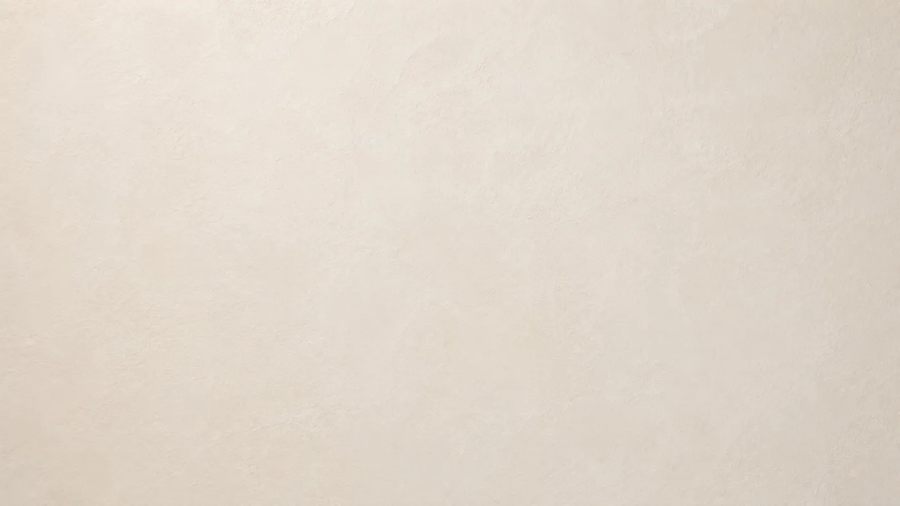

The story of chukum
A land that keeps whatever passes through it.
Sixty-six million years between an impact and a wall. Scroll to travel through them.


Antes de todo
El impacto
La huella

True architecture is not measured by how it looks on day one. It is measured by how it withstands time.
The most important works are not built for the present.
They are built to last.